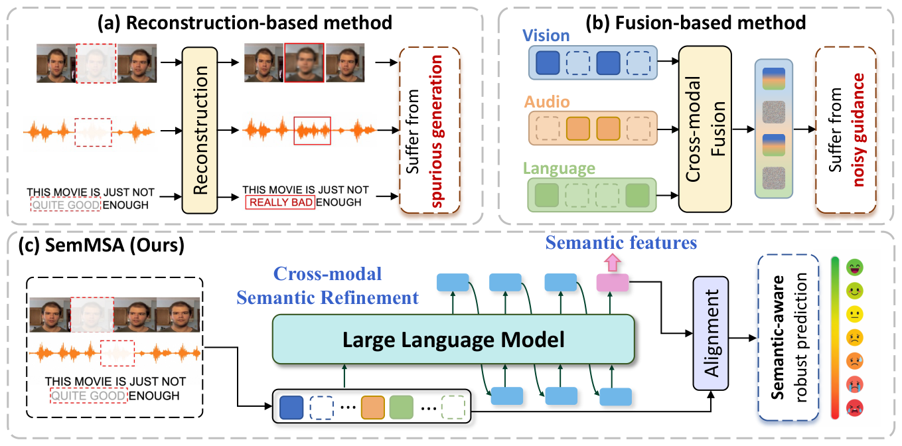
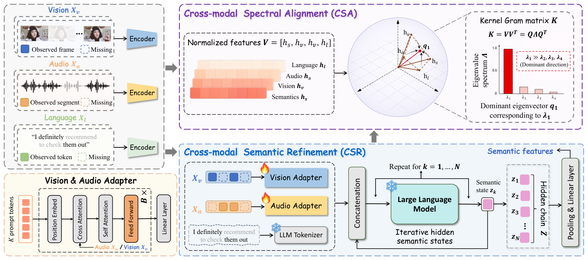
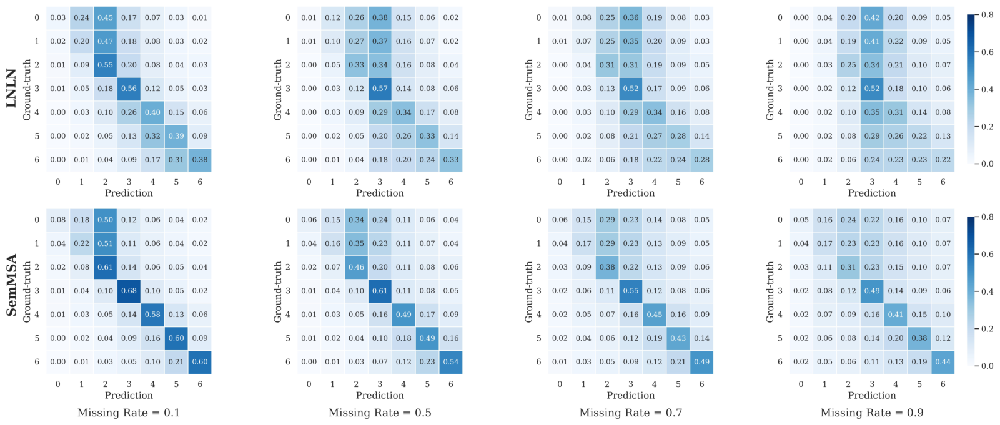
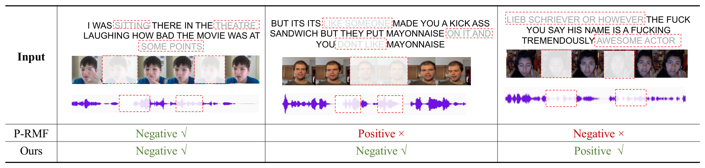

SemMSA: Latent Semantic-Aided Robust Multimodal Sentiment Analysis with Incomplete Data

Abstract
Recent research on Multimodal Sentiment Analysis (MSA) has focused on learning from language, visual, and acoustic modalities with incomplete data to infer human sentiment. Most studies typically compensate for missing information by reconstructing modality features or designing complicated fusion mechanisms. However, these methods still suffer from spurious generation and noisy guidance due to the lack of high-level semantic grounding in partially observed multimodal evidence. To address these issues, we propose SemMSA, a latent semantic-aided framework that constructs rich sentiment-relevant semantics with LLMs, fully integrating with all modalities via anchor-free spectral alignment. It mainly consists of Cross-modal Semantic Refinement (CSR) and Cross-modal Spectral Alignment (CSA). Specifically, CSR first adaptively extracts visual and acoustic representations by corresponding adapters to form a unified multimodal prefix with language in the frozen LLM embedding space. It then iteratively produces continuous discriminative semantic states through a token-efficient latent refinement process without decoding explicit text. Next, CSA simultaneously aligns the refined semantics with all modalities by enhancing the dominant spectral component of their kernel Gram matrix. This captures global nonlinear dependencies among all representations without relying on a predefined anchor modality. In addition, an instance-level spectral separation constraint preserves cross-sample discriminability and mitigates representation collapse. Extensive experiments on SIMS, MOSI, and MOSEI benchmarks demonstrate that SemMSA achieves state-of-the-art performance.
Motivation
In real-world scenarios, partial tokens, frames, or acoustic segments within each modality are often corrupted by noise, occlusion, sensor failure, or transmission instability. Reconstruction-based methods recover low-level feature patterns rather than the high-level semantics that sentiment understanding relies on, and may hallucinate features that contradict the actual sentiment evidence. Fusion-based methods integrate the available modalities through complex interaction modules, but the fused features still suffer from noisy observations and limited evidence under severe missingness. SemMSA instead compensates incomplete data at the semantic level: it refines sentiment-relevant semantics with a frozen LLM in the hidden space, without decoding explicit text, and integrates them with all modalities.

Method

Cross-modal Semantic Refinement (CSR)
Visual and acoustic adapters use \(M\) learnable prompts with cross- and self-attention to aggregate reliable evidence from incomplete sequences into \(Z_v, Z_a \in \mathbb{R}^{M\times d}\) in the frozen LLM embedding space. With the embedded language \(Z_l\), they form the prefix \(U^{(0)} = [Z_l; Z_v; Z_a]\). CSR then appends the last hidden state of the frozen LLM as a continuous latent token for \(O\) steps:
yielding latent semantic states \(Z = [z_1;\dots;z_O]\) without decoding explicit text, which are pooled and projected into the semantic representation \(H_s\).
Cross-modal Spectral Alignment (CSA)
The normalized representations \(V = (h_s, h_v, h_a, h_l)\) form an RBF kernel Gram matrix \(K = Q\Lambda Q^\top\). If the four representations are aligned, \(K\) is close to rank one, so CSA treats the eigenvalues as logits and enhances the dominant one:
An instance-wise separation loss \(\mathcal{L}_{sep}\) penalizes the similarity between the dominant semantic directions \(u_1^i = V_i q_1^i / \lVert V_i q_1^i\rVert_2\) of different instances to prevent representation collapse. The aligned features are fused as \(\hat{H} = H_s + H_v + H_a + H_l\).
Main Results
Average results over random missing rates from 0.0 to 0.9 under intra-modal missingness. Acc-2 and F1 on MOSI and MOSEI are reported as negative/non-negative and negative/positive.
Table 1. The average results on MOSI and MOSEI datasets over missing rates from 0.0 to 0.9.
| Method | MOSI | MOSEI | ||||||||||
|---|---|---|---|---|---|---|---|---|---|---|---|---|
| Acc-2 | F1 | Acc-5 | Acc-7 | MAE ↓ | Corr ↑ | Acc-2 | F1 | Acc-5 | Acc-7 | MAE ↓ | Corr ↑ | |
| MISA | 70.33/71.49 | 70.00/71.28 | 33.08 | 29.85 | 1.085 | 0.524 | 75.82/71.27 | 68.73/63.85 | 39.39 | 40.84 | 0.780 | 0.503 |
| Self-MM | 69.26/70.51 | 67.54/66.60 | 34.67 | 29.55 | 1.070 | 0.512 | 77.42/73.89 | 72.31/68.92 | 45.38 | 44.70 | 0.695 | 0.498 |
| MMIM | 67.06/69.14 | 64.04/66.65 | 33.77 | 31.30 | 1.077 | 0.507 | 75.89/73.32 | 70.32/68.72 | 41.74 | 40.75 | 0.739 | 0.489 |
| TETFN | 67.68/69.76 | 63.29/65.69 | 34.34 | 30.30 | 1.087 | 0.507 | – | – | – | – | – | – |
| TFR-Net | 66.35/68.15 | 60.06/61.73 | 34.67 | 29.54 | 1.200 | 0.459 | 77.23/73.62 | 71.99/68.80 | 34.67 | 46.83 | 0.697 | 0.489 |
| ALMT | 68.39/70.40 | 71.80/72.57 | 33.42 | 30.30 | 1.083 | 0.498 | 77.54/76.64 | 78.03/77.14 | 41.64 | 40.92 | 0.674 | 0.481 |
| LNLN | 70.94/72.55 | 71.25/72.73 | 38.27 | 34.26 | 1.046 | 0.527 | 78.19/76.30 | 79.95/77.77 | 46.17 | 45.42 | 0.692 | 0.530 |
| P-RMF | 71.53/72.81 | 71.69/72.93 | 38.50 | 34.19 | 1.038 | 0.525 | 78.83/78.14 | 80.39/79.33 | 45.87 | 44.63 | 0.658 | 0.589 |
| TF-Mamba | 73.46/72.54 | 73.59/72.57 | 37.74 | 33.95 | 1.035 | 0.548 | 77.34/77.61 | 77.18/77.43 | 46.64 | 45.66 | 0.673 | 0.578 |
| SemMSA (Ours) | 74.36/73.91 | 74.18/73.82 | 40.93 | 36.49 | 1.011 | 0.550 | 79.61/79.38 | 80.62/79.87 | 48.12 | 47.06 | 0.648 | 0.601 |
Table 2. The average results on SIMS dataset over missing rates from 0.0 to 0.9.
| Method | Acc-2 | F1 | Acc-3 | Acc-5 | MAE ↓ | Corr ↑ |
|---|---|---|---|---|---|---|
| MISA | 72.71 | 66.30 | 56.87 | 31.53 | 0.539 | 0.348 |
| Self-MM | 72.81 | 68.43 | 56.75 | 32.28 | 0.508 | 0.376 |
| MMIM | 69.86 | 66.21 | 56.76 | 31.81 | 0.544 | 0.339 |
| TETFN | 73.58 | 68.67 | 56.91 | 33.42 | 0.505 | 0.387 |
| TFR-Net | 68.13 | 58.70 | 52.89 | 26.52 | 0.661 | 0.169 |
| ALMT | 71.85 | 76.21 | 56.47 | 34.16 | 0.509 | 0.372 |
| LNLN | 73.15 | 69.18 | 57.32 | 34.68 | 0.515 | 0.387 |
| P-RMF | 73.64 | 74.65 | 54.75 | 34.83 | 0.500 | 0.414 |
| TF-Mamba | 74.68 | 72.20 | 55.51 | 34.46 | 0.512 | 0.386 |
| SemMSA (Ours) | 75.46 | 77.50 | 58.84 | 35.68 | 0.474 | 0.501 |
Table 3. The F1 scores on the MOSEI dataset under varying inter-modal missing conditions.
| Method | {l} | {a} | {v} | {l, a} | {l, v} | {a, v} | {l, a, v} | Avg. |
|---|---|---|---|---|---|---|---|---|
| Self-MM | 71.53 | 43.57 | 37.61 | 75.91 | 74.62 | 49.52 | 83.69 | 62.35 |
| CubeMLP | 67.52 | 39.54 | 32.58 | 71.69 | 70.06 | 48.54 | 83.17 | 59.01 |
| DMD | 70.26 | 46.18 | 39.84 | 74.78 | 72.45 | 52.70 | 84.78 | 63.00 |
| MCTN | 75.50 | 62.72 | 59.46 | 76.64 | 77.13 | 64.84 | 81.75 | 71.15 |
| TransM | 77.98 | 63.68 | 58.67 | 80.46 | 78.61 | 62.24 | 81.48 | 71.87 |
| SMIL | 76.57 | 65.96 | 60.57 | 77.68 | 76.24 | 66.87 | 80.74 | 72.09 |
| GCNet | 80.52 | 66.54 | 61.83 | 81.96 | 81.15 | 69.21 | 82.35 | 74.79 |
| CorrKD | 80.76 | 66.09 | 62.30 | 81.74 | 81.28 | 71.92 | 82.16 | 75.18 |
| SemMSA (Ours) | 83.61 | 66.59 | 65.91 | 85.17 | 84.96 | 72.68 | 86.32 | 77.89 |
Results under Every Missing Rate
As the missing rate increases, most baselines degrade clearly, while SemMSA maintains consistently superior and more stable performance. Choose a dataset and a metric; click a method in the legend to show or hide it.
Robust comparison under random missing rates 0.0–0.9
Values from Tables 12–14 of the paper. The full tables are also in results/paper_results.md.
Efficiency
Trainable params
Task GFLOPs
Latency
Memory
Table 6 of the paper, on MOSI. Trainable parameters and GFLOPs include only the modules optimized for MSA; memory and latency cover the entire pipeline with the frozen LLM. SemMSA avoids autoregressive decoding of textual descriptions and appends only a few continuous latent states.
Analysis


BibTeX
@article{li2026semmsa,
title = {SemMSA: Latent Semantic-Aided Robust Multimodal Sentiment Analysis with Incomplete Data},
author = {Li, Wenhao and Wu, Zhibin and Xiao, Chong and Wang, Qiangchang},
journal = {arXiv preprint arXiv:2609.30238},
year = {2026}
}